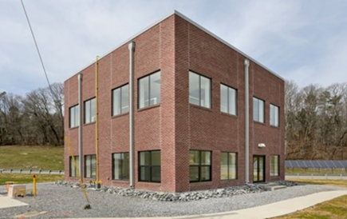
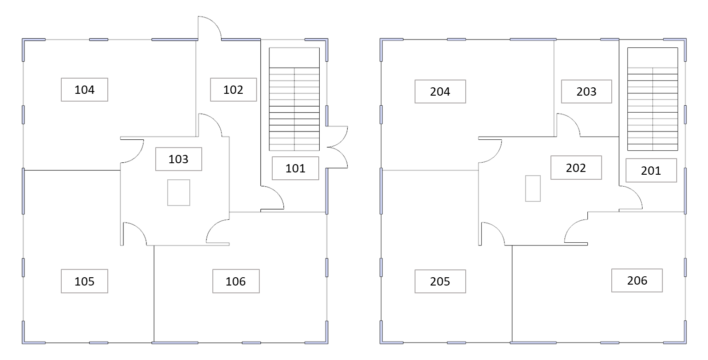
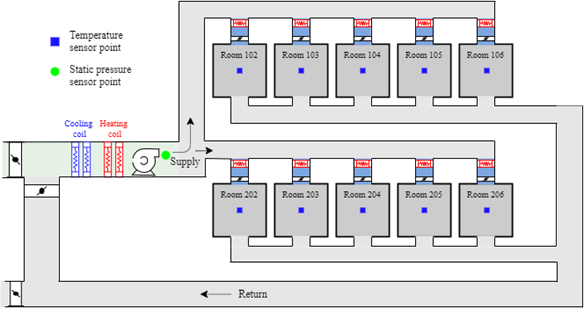
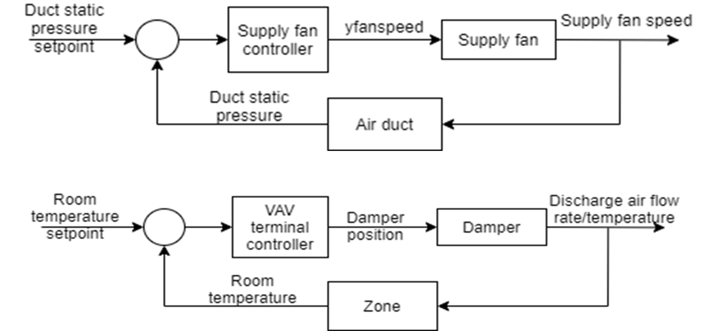

Multi-zone commercial air example using a VAV RTU with reheat
This is a Multi-zone commercial air system model with a RTU VAV with reheat system.
This test cases is modeled based on an actual research platform that represents a typical medium-sized office building Built in 2013, the two-story flexible research platform (FRP) (Figure 1) is located in Oak Ridge, Tennessee (84°19' longitude, 35°55' latitude). The FRP, with a footprint of 40 ×40 ft (12 × 12 m), is an unoccupied research apparatus that can be used to physically simulate light commercial buildings common in the United States’ existing building stock. Figure 2 shows the floor plans of FRP.

Figure 1. Oak Ridge National Laboratory FRP

Figure 2. FRP Floor plans
The building is exposed to natural weather conditions for research and development, leading to system- and building-level advanced energy efficiency solutions for new and retrofit applications. Additionally, a dedicated weather station is installed on the roof of the FRP so that actual weather data can be used in performance analysis and modeling. The eight windows were evenly distributed on the top floor. The window distribution for the first floor was identical to the top floor except that two windows on the north and east sides were replaced by glass doors.The HVAC system in the FRP building is a rooftop unit (RTU) variable air volume (VAV) system with electric reheat, and the building has 10 thermal zones (8 perimeter zones and 2 core zones) that can be individually controlled. Fixed infiltration rate (0.432 air changes/h) is applied to the perimeter zones.
Exterior walls
The multi-zone model was developed using the room model in Modelica Buildings Library (Version 8.1.0), and the typical walls consist of the following layers:
Typical Exterior Walls
Name |
Thickness [m] |
Thermal Conductivity [W/m-K] |
Specific Heat Capacity [J/kg-K] |
Density [kg/m3] |
Face Brick |
0.092 |
1.31 |
920.48 |
2082.3 |
Air |
0.004106 |
0.0262 |
0.000718 |
1.2 |
Concrete Block |
0.203 |
1.31 |
920 |
1121.3 |
Spray foam with Metal Stud |
0.0889 |
0.02884 |
1210 |
32 |
Gypsum |
0.0158 |
0.16 |
1090 |
784.9 |
Exterior Wall (Room 104)
Name |
Thickness [m] |
Thermal Conductivity [W/m-K] |
Specific Heat Capacity [J/kg-K] |
Density [kg/m3] |
Face Brick |
0.092 |
1.31 |
920.48 |
2082.3 |
Air |
0.004106 |
0.0262 |
0.000718 |
1.2 |
Concrete Block |
0.203 |
1.31 |
920 |
1121.3 |
Spray Foam with Metal Stud |
0.0889 |
0.02884 |
1210 |
32 |
Air |
0.004106 |
0.0262 |
0.000718 |
1.2 |
Gypsum |
0.0158 |
0.16 |
1090 |
784.9 |
Exterior Wall (Room 204)
Name |
Thickness [m] |
Thermal Conductivity [W/m-K] |
Specific Heat Capacity [J/kg-K] |
Density [kg/m3] |
Face Brick |
0.092 |
1.31 |
920.48 |
2082.3 |
Air |
0.004106 |
0.0262 |
0.000718 |
1.2 |
Concrete Block |
0.203 |
1.31 |
920 |
1121.3 |
Spray Foam with Metal Stud |
0.0889 |
0.02884 |
1210 |
32 |
Rigid Foam Board |
0.0058 |
0.02605 |
920 |
32.0 |
Gypsum |
0.0158 |
0.16 |
1090 |
784.9 |
Floor
The floor consists of the following layers:
Name |
Thickness [m] |
Thermal Conductivity [W/m-K] |
Specific Heat Capacity [J/kg-K] |
Density [kg/m3] |
Lower Concrete |
0.1524 |
1.95 |
900 |
2322.6 |
Insulation |
0.3048 |
0.033 |
836.8 |
30 |
Upper Concrete |
0.3048 |
1.95 |
900 |
2322.6 |
Roof
The roof consist of the following layers:
Name |
Thickness [m] |
Thermal Conductivity [W/m-K] |
Specific Heat Capacity [J/kg-K] |
Density [kg/m3] |
Standard PW05 |
0.01909 |
0.115 |
1213 |
545 |
Roof Insulation |
0.0762 |
0.024023 |
836.8 |
265.0 |
Roof Membrane |
0.0095 |
0.16 |
1460 |
1121.3 |
Metal Decking |
0.0015 |
45.006 |
418.4 |
7680.0 |
The building is is an unoccupied research apparatus.
There are electric and lighting loads during weekdays and weekends.
A dedicated weather station is installed on the roof of the FRP so that actual weather data can be used in performance analysis and modeling. The model uses a climate file containing one year of weather data for Oak Ridge, Tennessee.
The multi-zone HVAC system of the FRP is shown in Figure 3.
Figure 3. Schematic of the HVAC system
The following assumptions were made for model simplification. The direct expansion (DX) coil was modeled as a variable speed DX coil with a 12.5 ton capacity. The RTU had a 9.6 energy efficiency rating, and each room had a VAV box with electric resistance reheat, and the heating coil was modeled as an electric heating coil. The zone electric heat in the VAV boxes was activated to provide the necessary perimeter heat. The electric reheat capacities were set from 1,000 to 5,000 W, and each nominal airflow rate was set from 0.108 to 0.334 m3/s. The central fan in the air handling unit drew return air from each room, and the nominal airflow rate of the system was set to 2.543 m3/s.The supply fan controller and VAV terminal controllers are shown in Figure 4.

Figure 4. Supply fan controller and VAV terminal controller
The supply fan was controlled by a local proportional-integral (PI) controller to maintain a static pressure of 1,000 Pa. To be consistent with the experimental condition of the FRP, the outdoor air damper in the Modelica model was fully closed, and the DX coil was controlled by a PI controller to meet the supply air temperature of 15°C. The PI controller manipulated the VAV damper position, and the control variable was the zone air temperature (cooling setpoint temperature: 22°C; heating setpoint temperature: 20°C).supplyTempCon.oveTSup.u [K] [min=285.15, max=313.15]: Supply air temperature setpoint
thermostat_T.oveTSetHea_u [K] [min=288.15, max=296.15]: Zone temperature setpoint for heating
thermostat_T.oveTSetCoo.u [K] [min=296.15, max=303.15]: Zone temperature setpoint for cooling
fan.m_flow [kg/s] [min=None, max=None]: Supply air mass flow rate
supplyTempCon.reaTSup.y [K] [min=None, max=None]: Supply air temperature setpoint
thermostat_T.reaTSetCoo.y [K] [min=None, max=None]: Zone air temperature setpoint for cooling
thermostat_T.reaTSetHea_y [K] [min=None, max=None]: Zone air temperature setpoint for heating
DX.P [W] [min=None, max=None]: DX coil power consumption
DX.QSen_flow [W] [min=None, max=None]: DX coil sensible heat flow rate
DX.QLat_flow [W] [min=None, max=None]: DX coil latent heat flow rate
elecHea.P [W] [min=None, max=None]: Electric heater power consumption
VAVReHeat_withCtrl_TRooCon102.conCoo.y a [min=None, max=None]: VAV control output for cooling for zone 102
VAVReHeat_withCtrl_TRooCon102. conHea.y a [min=None, max=None]: VAV control output for heating for zone 102
VAVREheat_withCtrl_TrooCon102ReHeat.Q_flow a [W] [min=None, max=None]: VAV reheat power consumption for zone 102
TRooFir.y1 b [K] [min=None, max=None]: Zone temperature of 101
a)Outputs are available for all conditioned zones (102,103,104,105,106, 202,203,204,205,206).
b)Outputs are available for all zones (TRooFir.y1, TRooFir.y2, TRooFir.y3, TRooFir.y4, TRooFir.y5, TRooFir.y6, TRooSec.y1, TRooSec.y2, TRooSec.y3, TRooSec.y4, TRooSec.y5, TRooSec.y6).
Energy Pricing
The Constant Electricity Price profile is:
The Dynamic Electricity Price profile is:
The Gas Price profile is:
The Electricity Emissions Factor profile is:
The Gas Emissions Factor profile is: